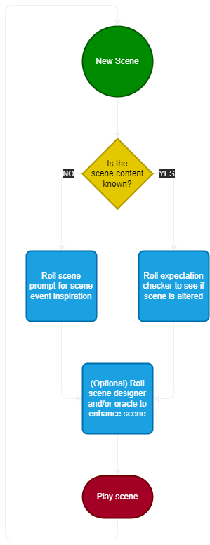

Plot Unfolding Machine
Prompt
Expectation
Catalyst
Challenge
Circumstance
Complication
Discovery
Risk
Yes/No
Likely
Unlikely
What
Who
Intent
Activity
Reason
Area
Object
Someone
Ability
Danger
Enemy
Item
People
Credits
The Plot Unfolding Machine (PUM) is a system that can be layered onto any role playing game to make it playable without a game master.
PUM is created by Jeansen Vaars and is available to buy from Itch.io.
Icons created by Delapouite, Lorc and Sbed.
Web app developed Jeffrey Smith.
Help
Below are brief explanations of the different elements provided by PUM.
Catalyst
These recall different meta-game elements of your setting. For example, history, society, character weaknesses, remove events or curiosities around.
Challenge
Challenges alone can be a great source of inspiration for scenes "Strength, force or power might help", could mean there's a door to be forced open, what is that door and where does it lead to? Why is it there?
Circumstance
Used to complicate challenges, as well as combats. It may be invoked whenever you need a bit more of flavor in any of the scenes you are thinking of.
Complication
Best used when any of the other oracles call for it. Similarly, sometimes it can happen that the game events themselves lead to further trouble, so feel free to use any of the oracles freely, when you are in need of inspiration.
Discovery and Risk
These represent outcomes, discoveries and findings that advance or hinder your PCs goals. Works well both in a scene setup, to refine them, or as well during a scene, when the opportunity arises.
Oracles
Oracle elements provide extra details or inspiration for the scene setup or situations that arise during play.
Overview

More Help
For more advice on using Plot Unfolding Machine, make sure you grab a copy of the system.
If you have further questions, check out Jeansen Vaars' website or Youtube.